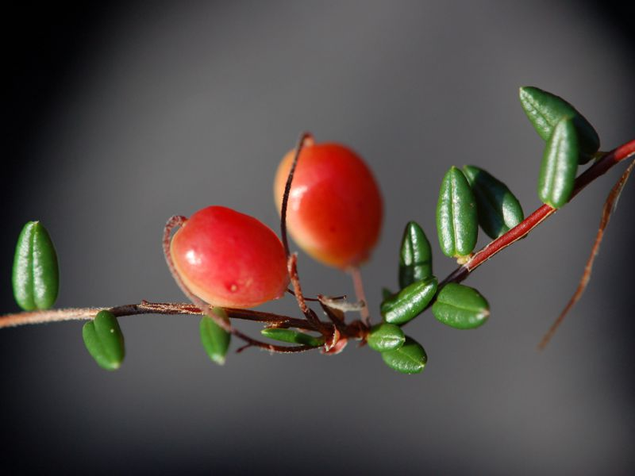

Moosbeere
Vaccinium oxycoccus
Ein immergrüner Zwergstrauch mit fadenförmig dünnen, kriechenden Stängeln, winterharten Blättern und hellpurpurnen Blüten. Die vereinzelt auf Moospolstern liegenden, säuerlich schmeckenden roten Früchte können wie PreiselBeeren verwendet werden.
Diesen Sträuchern verwandt ist die Rosmarinheide (Andromeda polifolia). Sie entwickelt jedoch keine Beeren, sondern Kapselfrüchte. Das ist auch gut so, denn die Pflanze ist in allen Teilen giftig.
Kennzeichen: Immergrüne, netzadrige Blätter.